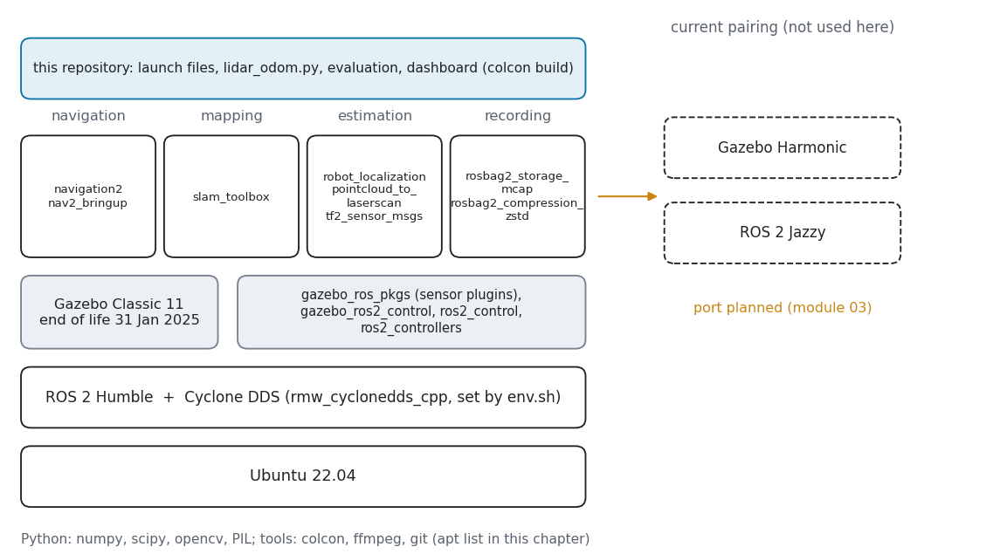
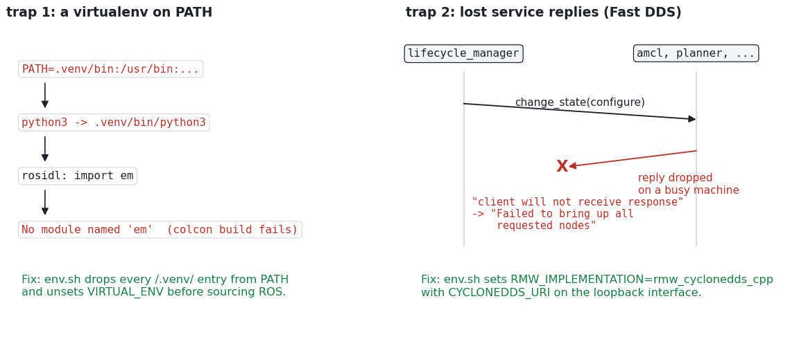

Start · Chapter 2
Prerequisites
| Goal | A machine with Ubuntu 22.04, ROS 2 Humble, Gazebo Classic 11 and every package the stack loads, each version checked. |
| Time | 0.5 h of work, plus the download time of the packages. Chapters 2 and 3 together: 2 h. |
| Before you start | Ubuntu 22.04 with ROS 2 Humble installed from the ROS apt repository (ros-humble-desktop), and sudo for apt. On any other Linux host: Docker, and task 2.4 instead of 2.1 to 2.3. |
| You will learn | which packages the stack needs and why; how to check a version; how to get the same packages in a dev container with RViz on your desktop; the two environment settings that env.sh makes and what fails without them. |
Tested on Ubuntu 22.04.5 with ROS 2 Humble and Gazebo 11.10.2, on a laptop with an RTX 4090 and 32 threads. The stack ran at 1.0x real time there when nothing else was running. A discrete GPU is not required, but three cameras (RGB-D, chase and spectator) and a 16-beam GPU lidar are slow on integrated graphics.
Gazebo Classic 11 reached end of life on 31 January 2025 and is not available for ROS 2 Jazzy. It still installs and works on Humble, which is why this course uses it, but it receives no fixes. The current pairing is ROS 2 Jazzy with Gazebo Harmonic; porting to it is on the roadmap (module 03). The algorithms, configurations and evaluation here do not depend on the simulator.

What this chapter installs, bottom to top, with the apt packages grouped by the part of the stack that uses them. Dashed: the current pairing, not used here.
Task 1: Check the machine
1.1 Read the operating system and the hardware
Objective: confirm the OS and that the machine is large enough before installing anything.
lsb_release -ds; nproc; free -g | head -2; df -h . | tail -1
nvidia-smi --query-gpu=name,driver_version --format=csv,noheader # only on NVIDIA machines
Ubuntu 22.04.5 LTS
32
total used free shared buff/cache available
Mem: 62 17 31 1 14 43
/dev/nvme0n1p2 1.9T 1.5T 287G 84% /
NVIDIA GeForce RTX 4090 Laptop GPU, 580.196.07
Check: Ubuntu 22.04; 8 or more threads from nproc; about 5 GB free plus 0.6 GB per simulated minute you plan to record
(chapter 0, task 2.2, has the measured bag size).
The cameras and the GPU lidar need an OpenGL context, so the machine needs a display (a desktop session, or a virtual one such as Xvfb; only a desktop session was tested). Gazebo itself runs without a window.
Task 2: Install the packages
2.1 Install from apt
Objective: get every ROS package the launch files load.
sudo apt install \
ros-humble-navigation2 ros-humble-nav2-bringup ros-humble-slam-toolbox ros-humble-robot-localization \
ros-humble-pointcloud-to-laserscan ros-humble-tf2-sensor-msgs ros-humble-xacro \
ros-humble-gazebo-ros-pkgs ros-humble-gazebo-ros2-control ros-humble-ros2-control ros-humble-ros2-controllers \
ros-humble-rmw-cyclonedds-cpp ros-humble-rosbag2-storage-mcap ros-humble-rosbag2-compression-zstd \
python3-colcon-common-extensions python3-numpy python3-scipy python3-opencv python3-pil ffmpeg git
Check: apt ends without an E: line.
Without sudo, skip ros-humble-gazebo-ros-pkgs; scripts/setup.sh downloads the three packages that carry the Gazebo sensor
plugins with apt-get download and unpacks them into overlay/. Everything else in the list must already be installed.
2.2 Check the versions
Objective: see one installed version per package, so a missing one shows up now and not as a launch error later.
source /opt/ros/humble/setup.bash
gzserver --version | head -1
dpkg-query -W -f='${Package} ${Version}\n' \
ros-humble-navigation2 ros-humble-nav2-bringup ros-humble-slam-toolbox ros-humble-robot-localization \
ros-humble-pointcloud-to-laserscan ros-humble-tf2-sensor-msgs ros-humble-xacro ros-humble-gazebo-ros \
ros-humble-gazebo-ros2-control ros-humble-controller-manager ros-humble-joint-state-broadcaster \
ros-humble-joint-trajectory-controller ros-humble-rmw-cyclonedds-cpp ros-humble-rosbag2-storage-mcap \
ros-humble-rosbag2-compression-zstd python3-colcon-common-extensions python3-scipy python3-opencv
python3 -c "import rosbag2_py, scipy, cv2, PIL; print('python ok')"
Gazebo multi-robot simulator, version 11.10.2
python3-colcon-common-extensions 0.3.0-100
python3-opencv 4.5.4+dfsg-9ubuntu4
python3-scipy 1.8.0-1exp2ubuntu1
ros-humble-controller-manager 2.54.4-1jammy.20261110.114722
ros-humble-gazebo-ros 3.9.0-1jammy.20261110.093533
ros-humble-gazebo-ros2-control 0.4.10-1jammy.20261110.115950
ros-humble-joint-state-broadcaster 2.54.1-1jammy.20261110.120247
ros-humble-joint-trajectory-controller 2.54.1-1jammy.20261110.120319
ros-humble-nav2-bringup 1.1.20-1jammy.20261110.143749
ros-humble-navigation2 1.1.20-1jammy.20261110.141012
ros-humble-pointcloud-to-laserscan 2.0.1-3jammy.20261110.105208
ros-humble-rmw-cyclonedds-cpp 1.3.6-1jammy.20261105.210505
ros-humble-robot-localization 3.5.5-1jammy.20261110.114902
ros-humble-rosbag2-compression-zstd 0.15.17-1jammy.20261110.123753
ros-humble-rosbag2-storage-mcap 0.15.17-1jammy.20261110.121520
ros-humble-slam-toolbox 2.6.10-1jammy.20261110.140327
ros-humble-tf2-sensor-msgs 0.25.24-1jammy.20261110.103310
ros-humble-xacro 2.1.1-1jammy.20261031.125215
python ok
Check: Gazebo 11.x, one line per package, python ok. Your version strings will be newer or older; the major and minor
numbers (Nav2 1.1, slam_toolbox 2.6, ros2_control 2.x) are what matter.
Common mistakes: dpkg-query: no packages found matching ros-humble-... names the missing package; install it and repeat. The
check lists the ros2_control packages one by one (controller-manager, joint-state-broadcaster,
joint-trajectory-controller), because those are what the launch files load; the machine above has them without the
ros-humble-ros2-control and ros-humble-ros2-controllers metapackages.
2.3 Check the sensor plugins
Objective: confirm Gazebo can load the camera, lidar and IMU plugins.
ls /opt/ros/humble/lib/libgazebo_ros_camera.so 2>/dev/null || echo "not installed: setup.sh will unpack it into overlay/"
On the test machine:
not installed: setup.sh will unpack it into overlay/
Check: either the path or the message. Both work; chapter 3, task 1, handles the second case.
2.4 Or use the dev container
Objective: get the same packages on any Linux host with Docker, and open RViz from inside the container.
.devcontainer/Dockerfile starts from osrf/ros:humble-desktop-full-jammy (ROS 2 Humble, Gazebo 11 and RViz) and installs
the apt list of 2.1. It adds a user dev with your user and group ID, so that files the build writes into the repository
belong to you. .devcontainer/devcontainer.json holds the same settings for an editor that opens dev containers. Build the
image once, from the clone of chapter 0, task 1.1:
cd go2-nav-sim
docker build -t go2-nav-sim --build-arg USER_UID=$(id -u) --build-arg USER_GID=$(id -g) .devcontainer
Start a shell in it. The repository is mounted, so the build and the bags stay on the host. RViz draws on your desktop
through the X socket, your X cookie and /dev/dri; --net=host lets the cookie match and keeps DDS on the host's loopback:
docker run --rm -it --net=host --device /dev/dri \
-e DISPLAY -e XAUTHORITY=/tmp/.Xauthority \
-v /tmp/.X11-unix:/tmp/.X11-unix -v "$XAUTHORITY":/tmp/.Xauthority:ro \
-v "$PWD":/home/dev/go2-nav-sim go2-nav-sim bash
Inside the container:
rviz2
QStandardPaths: XDG_RUNTIME_DIR not set, defaulting to '/tmp/runtime-'
[INFO] [...] [rviz2]: Stereo is NOT SUPPORTED
[INFO] [...] [rviz2]: OpenGl version: 4.6 (GLSL 4.6)
[INFO] [...] [rviz2]: Stereo is NOT SUPPORTED
Check: an empty RViz window opens on your desktop and its status bar says RViz is ready. Global Status shows No tf data
because nothing publishes yet. Close the window, then continue with task 3 and chapter 3 inside the container.
What was tested: the docker run line above on the Ubuntu 22.04 test machine, with the base image
osrf/ros:humble-desktop-full-jammy in place of go2-nav-sim and --user $(id -u):$(id -g) -e HOME=/tmp added, because the
base image has no dev user. RViz opened with OpenGL 4.6. The docker build step and running the stack
inside the container were not tried, because the build downloads the apt packages.
Task 3: Avoid the two environment traps
3.1 See which middleware ROS uses
Objective: confirm that env.sh switches ROS from Fast DDS to Cyclone DDS.
Fast DDS drops service replies on a busy machine. Nav2 starts its nodes with lifecycle service calls, and a lost reply aborts
the bring-up. env.sh selects Cyclone DDS on the loopback interface. Run this in a new terminal, inside the repository
(cloned in chapter 0, task 1.1):
source /opt/ros/humble/setup.bash
ros2 doctor --report | grep 'middleware name'
source env.sh
ros2 doctor --report | grep 'middleware name'
middleware name : rmw_fastrtps_cpp
middleware name : rmw_cyclonedds_cpp
Check: the second line says rmw_cyclonedds_cpp. Source env.sh in every terminal you open for this course.
3.2 Keep a virtualenv out of the build
Objective: make sure the build uses the system Python.
A Python virtualenv on PATH breaks the build: rosidl imports em (empy) from whichever python3 comes first. The first
line of env.sh unsets VIRTUAL_ENV and removes the PATH entries that contain /.venv/.
source env.sh
which python3
/usr/bin/python3
Check: /usr/bin/python3.
Common mistakes: the repository's own module environment, .venv-modules (from modules/setup.sh), does not match /.venv/,
so env.sh leaves it on PATH. With it active, colcon build of champ_msgs stopped with
ModuleNotFoundError: No module named 'em'. Run deactivate before source env.sh.

How each trap fails and the env.sh line that prevents it. The error messages are the ones listed in chapter 12.
Exercise
ros2 doctor showed rmw_fastrtps_cpp before source env.sh, although no line in your shell set it. Where does that value come
from, and which two variables does env.sh set to change it?
Answer: ROS 2 Humble uses Fast DDS when RMW_IMPLEMENTATION is unset. env.sh sets
RMW_IMPLEMENTATION=rmw_cyclonedds_cpp and CYCLONEDDS_URI=file://<repository>/config/cyclonedds.xml, which keeps Cyclone on
the loopback interface. Check with printenv RMW_IMPLEMENTATION CYCLONEDDS_URI.
Further reading
- Gazebo, "Installing Gazebo with ROS": https://gazebosim.org/docs/latest/ros_installation/
- ROS 2 documentation (humble),
How-To-Guides/Setup-ROS-2-with-VSCode-and-Docker-Container.rstinros2/ros2_documentation: the editor side of the dev container in 2.4. unitreerobotics/unitree_ros2,.devcontainer/: how the Go2's own ROS 2 package sets up its build container.
Source: docs/02-prerequisites.md